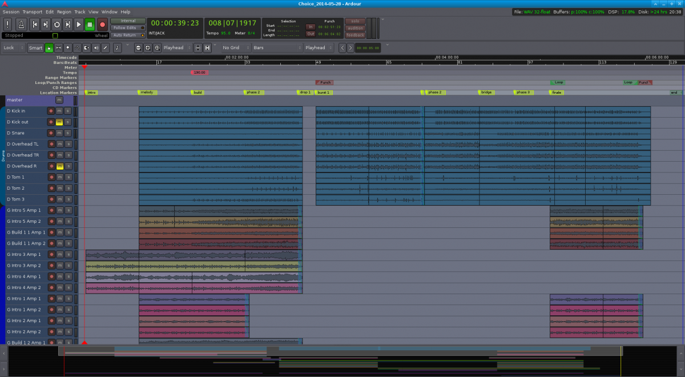
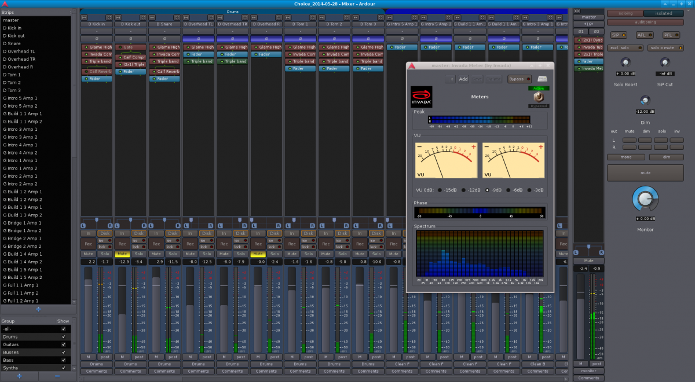

Jannis Pohlmann: How I produce music with Ardour
This article is written for all those interested in setting up a Linux home studio and using Ardour to record and mix their music, with the help of numerous free and open source tools and plugins.
I will illustrate my setup and processes based on songs created with my solo band MÆNAD, covering the recording setup, miking, audio interfaces, Linux configuration, tracking different instruments with Ardour, various mixing tricks using pass filters, equalizers, compressors and more, as well as exporting to WAV and FLAC/MP3.
The overall setup
My basic setup is this:
For instruments I have a drumkit, two guitars, a pedalboard with a few effects including a stereo delay, two guitar amps (one for each delay channel), a bass and bass amp and a synth.
For recording I use a regular desktop PC running Fedora 17 (yes, I am aware this is rather old), equipped with a FireWire card and a Bluetooth dongle, the former to connect an audio interface, the latter to connect a Wiimote for controlling Ardour remotely during recordings (coincidentally, I wrote the Wiimote plugin shipped with Ardour 3).
I use a Focusrite Saffire Pro 40 in combination with a Focusrite OctoPre MkII for routing microphones, amps and the synth to the computer for recording. The Saffire Pro 40 connects to the FireWire card, the OctoPre connects to the Saffire Pro 40 via ADAT. Together, this allows to record 16 mic/line inputs in parallel.
For monitoring I use the two headphone outputs of the Saffire Pro 40 to connect a pair of in-ears (for recording) and decent studio headphones. I also use two pairs of studio monitors (one good pair, the the other focused on mid-range). This gives me 4 different ways of playing recordings and mixes back in different qualities and with different characteristics (the in-ears are very bassy for example, while the other headphones lack a bit of bass). From my own experience I can definitely say that I lean towards using one of them (the studio headphones because I’m very used to them) for most of the mixing work and the others only to verify the mix and make adjustments.
Instrument miking
With miking there is no ultimate truth or recipe for a good sound. Taste varies, the room acoustics vary between different rooms, even between different spots in the same room, microphone characteristics vary. I’d say it’s all up to understanding the microphones and instruments you’re working with (e.g. through reading books and tutorials) as well as gaining confidence and an intuition for the methods you like through experimentation.
Having said that, there is a book that I can wholeheartedly recommend to anyone wanting to understand different microphones and miking techniques for all kinds of instruments: The Recording Engineer’s Handbook by Bobby Owsinski. Look it up, it’s an exceptional reference and includes interviews with various authorities in the music production business.
After reading and experimenting a lot, I have settled on the following miking setup (for now anyway):
Guitar
Due to my stereo delay pedal, I have to mic two amps. One of the amps acts as the main amp and is usually mixed more prominently. In my case, this is a 100 watt head with a 4x12 speaker cabinet. I tend to record it using a single dynamic mic, a Sennheiser E609, placed right in front of one of the speaker cones (pick the one that sounds best), towards its center. That’s it. I am thinking of expanding this in the future by recording the line out of the amp as well.
The secondary amp is miked in about the same way, except here I’m using a large condenser, a t.bone SC450, at about 5-10cm distance. I would have used a dynamic mic but I don’t have one that I can spare.
If you only have one amp I can recommend combining a close-range dynamic mic and a large condenser at 3m distance to capture a bit more of the room sound—if the room sounds good, that is.
Bass
The bass is miked similarly to the guitar amps. My bass amp is a 250 watt head powering a 4x10 cabinet. Instead of a regular dynamic microphone, I use a cheap bass drum microphone (Audio-Technica MB6K) and place it right in front of the center of one of the speaker cones.
I usually record the amp using the microphone and the amp’s DI out at the same time to obtain more flexibility during the mixing stage.
Drums
Miking drums is a topic that I could ramble on about forever, and I’m not even an expert. There is just so much to consider, so many factors that play into the result. This is why I’ve gone from one simple miking technique to the next. Today I usually put a close mic on the snare and all toms but at the heart of my drum recording setup is always the same simple approach.
Here are the techniques that I’ve been using over the past few years:
2 mics: one inside the kick drum (bass drum microphone or dynamic mic, often placed halfway in, pointing at the beater), one above the right shoulder of the drummer (large condenser, pointing down at the snare).
3 mics: one inside the kick drum (bass drum microphone, pointing near the beater), one above the kit (small or large condenser, pointing down at the center of the snare), one on the right (small or large condenser, ideally from a matched pair with the other microphone, pointing across the floor tom towards the center of the snare). The critical aspect here is that the two “overhead” mics are placed at the same distance to the snare to avoid phase issues. This is known as the Glyn Johns Method.
3 mics: one inside the kick drum (bass drum microphone, pointing near the beater), one in front of the drummers face (a bit higher really so it doesn’t get in the way, small or large condenser, pointing down at the snare), one above the right shoulder of the drummer (pointing down at the snare diagonally). This is known as the Recorderman Technique. As with the Glyn Johns Method, it is crucial that two overhead mics are placed at the same distance to the snare.
The nice thing about the above methods is that none of them require any magic beyond using a tape measure. I have come to like the Recorderman Technique in particular because it sounds good regardless of how bad the room acoustics are. It seems to provide a more focused and crisp sound compared to the Glyn Johns Method. That’s my impression anyway.
Any of these techniques can be enhanced by adding spot/close mics anywhere, e.g. at the snare, toms, kick or hi-hats.
Synth
This part at least is simple: mono or stereo line output, routed straight into the audio interface with one or two regular cables.
Reading Break — “Birth”
Ok, it’s time for a break. Here’s a song that I recorded and mixed earlier this year using the setups, tools and processes described in this article:
Ready for more? Alright then, let’s carry on!
Linux configuration
As mentioned earlier, my recording and mixing computer uses Fedora 17. I can’t move the recording machine around a lot, so while this is rather outdated by now, at least it is stable.
Here are a few details about the configuration I applied to the system that are specific to audio production:
Realtime
I use a 3.4.11 realtime kernel provided by the CCRMA. They provide repositories with realtime kernels for various distributions. If you plan on doing any serious recording or mixing work and you don’t want to be hindered by high latency and countless XRUNs along the way, go for realtime. It’s not a choice, really.
Configuring the rest of the system for realtime, setting up priorities, granting JACK and Ardour sufficient permissions over resources and all that can quickly become a complex task that’s tricky for beginners to handle. This is where realtimeconfigquickscan comes in handy. It runs various checks against your system configuration and tells you which parts and configurations you are missing before your system is ready for serious audio processing.
FireWire cards and FFADO
If you are a regularly working with FireWire audio devices on Linux, you probably know about compatibility problems with FireWire cards already. When I initially set up my home studio, I bought a random card with a VIA VT6315 chip, only to find out that it didn’t work with the Saffire Pro 40. As it turns out there are various known issues with different FireWire chipsets and FFADO. In the end I bought three different cards and only with one of them the Saffire Pro 40 worked properly, with the sample rate I wanted and all that. The card I use today has a Texas Instruments XIO2213B chipset and I can report that it works flawlessly.
This is something to consider before buying hardware. The FFADO wiki documents which chipsets are known to work and which are not.
Everything from Git (or Subversion)
In the process of experimenting with the FireWire cards I also decided to build FFADO, JACK, Ardour and various other software components straight from Git/Subversion. This means the audio stack versions are somewhat independent from my outdated Linux distribution and it ensures that I have a shortcut to pulling the latest fixes and improvements in. I admit, this isn’t feasible for Linux newcomers but if you know your way around build tools and Git/Subversion, it’s worth it.
JACK configuration
There’s not much to say about JACK itself. Once the realtime and FFADO setup is complete, I simply run jackd from the command line, with priority 70, 3000ms client timeout, using the FireWire driver, full duplex, 48000Hz with a latency of 128 samples (4 periods). For example. The parameters depend on your preferences and hardware.
Ardour configuration
I tend to leave the standard Ardour configuration alone for the most part. There are a few things that I always adjust, however:
Disable
Enable
Adjust
Disable
That’s it really. Other than that, I tend to use
Recording
We’ve covered the setup and system configuration—now let’s look at the actual recording process.
Inputs
Once everything is wired up and Ardour has been started, I have 16 mic/line input channels available to record from. Due to my miking setup, these are loosely divided as follows:
ADAT in 1: Drums Kick (inside)
ADAT in 2: Drums Kick (outside)
ADAT in 3: Drums Snare Close
ADAT in 4: Drums Overhead Top Left (Recorderman)
ADAT in 5: Drums Overhead Top Right (Recorderman)
ADAT in 6: Drums Tom 1 Close
ADAT in 7: Drums Tom 2 Close
ADAT in 8: Drums Tom 3 Close
1394 in 1: Guitar Amp 1
1394 in 2: Guitar Amp 2
1394 in 3: Bass DI
1394 in 4: Bass Mic
1394 in 5: Synth L/Mono
1394 in 6: -
1394 in 7: -
1394 in 8: -
As you will have noticed, a few of the inputs remain unused. That’s a good thing; it means I can always plug something new in without having to rewire. This is advice that I’m happy to give anyone: unless you need a mobile audio interface (usually 2 mic preamps), go for a little more than you need. Your experience will expand, you’ll buy more microphones, more instruments and so on. You will need more at some point.
Project template and track naming
Since this is more or less the same for every new Ardour project I create, I have saved one of these projects as a template that I then select whenever creating another project. Since I tend to layer guitars a lot, this template roughly includes the following tracks:
(Track, Mono) D Kick in
(Track, Mono) D Kick out
(Track, Mono) D Snare
(Track, Mono) D Overhead TL
(Track, Mono) D Overhead TR
(Track, Mono) D Tom 1
(Track, Mono) D Tom 2
(Track, Mono) D Tom 3
(Track, Mono) Guitar 1.1
(Track, Mono) Guitar 1.2
(Track, Mono) Guitar 2.1
(Track, Mono) Guitar 2.2
(Track, Mono) ...
(Track, Mono) Guitar 8.1
(Track, Mono) Guitar 8.2
(Track, Mono) Bass DI
(Track, Mono) Bass Mic
(Bus, Stereo) Drums
(Bus, Stereo) Drums + Bass
(Bus, Stereo) Guitars Foreground Distorted
(Bus, Stereo) Guitars Foreground Clean
(Bus, Stereo) Guitars Background Distorted
(Bus, Stereo) Guitars Background Clean
(Bus, Stereo) Guitars
(Bus, Stereo) Master
Instead of using generic names such as “Guitar 1.1”, “Guitar 1.2”, I often rename the tracks to have names like “Guitar Intro 1.1”, “Guitar Bridge 2.2” and so on.
So what does all this mean? I think the drums on their own are self-explanatory, as is the bass. The “Drums” bus combines all individual drum tracks to a stereo signal. The “Drums + Bass” bus combines the stereo drum bus and the bass tracks for parallel compression (more on that later). The different guitar busses are used for managing the different guitar layers during mixing. All busses then go straight into master, where they are further processed and put out through the speakers (or to the hard drive).
Since I record all guitar tracks twice (one mic for each amp), “Guitar 1.1” and “Guitar 1.2” would refer to “Guitar, First Track, First Amp” and “Guitar, First Track, Second Amp”. The first number says they come from the same take and belong together, the second refers to the amp. I often end up with about 20x2 guitar tracks alone and so I chose this naming scheme as a way to keep the amount of bookkeeping low. A compromise between usefulness and practicality, you could say.
The numbering scheme is useful to identify tracks in the editor and mixer. However, in most cases I identify them by where they are in the song structure in the editor, then I select them and then I switch to the mixer if I need to.
The visual arrangement in the editor usually follows the same pattern: markers at the top mark the beginning of different parts (e.g. “intro”, “melody”, “build 1”, “build 1 phase 2”, “drop 1”, “burst 1”, “bridge” and so on). Below that are the drums. Below that follow the guitars, starting with the tracks that play at the beginning of the song, concluded further down by the tracks that play towards the end. Even though it is usually playing during the entire song (like the drums), the bass is located at the bottom. This is because I often record it at the very end and want the bass tracks out of my way while working on the other tracks.
Record, Now! — The recording process
The way I write songs is pretty random: it starts on guitar, jamming about until I come across a melody or riff that I like. I’ll then try to find a second part that works with the first one. If I find one or more good parts or progressions, I’ll record them once (2 tracks) or twice (4 tracks). I’ll pan the 2 channels from each take to opposite sides to make the stereo delay effect work and to add depth to the sound. I’ll then try playing drums to this to see if it works. If it does, I’ll go back to guitars and extend the parts, add new ones, try to find a beginning and an end and so on.
The first idea I have is often a gentle intro melody, so I’ll develop the entire song from there, adding layer after layer with additional melodies, complementing riffs or identical tracks for doubling. I then go back to drums and work out the drums for the entire song. I’ll export the result, play it to others and to myself repeatedly and take mental note of things that I don’t like. Usually, all parts are too long, so when I go back to working on the song again, I don’t shy away from cutting them together drastically. If this results in abrupt breaks in the song, I’ll see if I can support, emphasize or smoothen out those breaks through my drumming.
Once I’m happy with the demo song, I’ll start again from scratch, with an empty project. The first step is always creating markers and tempos, as this defines the basic structure of the song. Once that is done, I’ll record track after track, layer after layer, until everything has been captured. And then I’ll get my bass from upstairs and rock out. That’s the most fun part of them all (followed by drumming)—jamming to the entire song on bass and making it groove.
Once everything has been recorded, this is what Ardour looks like:

Reading Break — “Choice”
And here’s the song from the screenshot. Take a break, grab a coffee and have a listen!
Mixing
Right, what’s next? Ah, mixing!
Mixing often starts during the recording already; panning tracks left and right, adjusting track volumes and other small (or big) adjustments are, technically, all part of the mixing process.
Let’s start with a few recommendations. Two books about mixing that I can recommend if you are a patient reader are Mixing Audio by Roey Izhaki and Mixing Secrets by Mike Senior. They describe all aspects of mixing in great detail. The emphasis is on detail here.
If you are like me—and if you have a Linux / open source background, you probably are to some degree—you’ll be happier just reading up on and understanding the basics and learning the rest through experimenting. I’ve found the hands-on tutorials by The Recording Revolution to be extremely useful, especially the different “30 Mixing Tricks in 30 Days” series. Unless you’re religious (and christian), be sure not to pay too much attention to the songs used in the tutorials, otherwise it can be a little off-putting as they are all about god and stuff. But the tutorials are really good, incredibly practical right away and make a lot of sense, so go watch them.
Back to Ardour. Cutting and editing audio regions and transitions aside, most of the mixing takes place in the mixer view. In the Ardour project for my song “Choice”, the mixer view looks like this:

As you can see there’s quite a lot going on here. Let’s break it down.
Tracks and groups
On the left we have a list of all tracks in the project, in the order they appear in in the editor and mixer view. In the bottom left corner we have a list of groups used in the projects. Separate groups for drums, guitars, busses etc. can help in applying the same state (e.g. solo, mute or recording), color and more to all tracks that belong together.
Mixer strips
The main area of the mixer view is dedicated to the mixer strips. There is one for each track and bus (unless hidden). From top to bottom, a mixer strip includes the track name, audio input (all disconnected in the screenshot, sadly), toggle switch for inverting phase, pre- (red) and post-fader (green) effects, panning controls, a group of monitoring and recording utilities, volume fader, automation control and volume probe point, group, and comments.
There’s also a separate mixer strip for the master bus, which usually is the last point where you can alter the sound before it leaves Ardour (unless you are also using a monitor bus).
Monitor section
On the far right, we have the monitor section. This allows you to switch between different solo modes (SiP, AFL, PFL), control the volume drop (or gain) when dimming, mute, dim, solo and phase-invert the left or right channel, toggle between stereo and mono (useful for detecting phase issues), or mute everything.
And that’s it, really. Of all these elements, the following are central during mixing: pre- and post-fader effects, panning, solo/mute and volume fader.
My mixing process
I usually start mixing with the drums. So I’ll solo the drum bus and perhaps the bass tracks and make the drums sound good. This usually involves balancing the volumes of individual drum tracks, panning the overheads and tom mics, applying a 100 Hz high-pass filter to all tracks but the kick, applying a compressor (usually Invada or linuxDSP’s DYN500) to kick, snare and toms, followed by subtle EQ-ing (usually a regular multiband EQ or linuxDSP’s parametric Black-EQ). I sometimes add a reverb to the snare as well (usually Calf reverb).
This is followed by balancing, compressing and EQ-ing the bass tracks. I’ll sometimes add effects to one of the bass tracks, such as the Calf Multi Chorus or the Invada Tube Distortion plugins. I’ll often attenuate the bass around the same frequencies where I’ve boosted the kick drum, so that they stay out of each other’s way.
In order to blend drums and bass together nicely and give them enough punch to cut through the mix, I’ll often apply ultra heavy compression to the “Drums + Bass” bus, as well as boosting highs and lows a little bit. I’ll keep the volume of this bus down all the way until the guitars and everything else have been mixed. I’ll then slowly move the D+B fader up until the attack and punch of drums and bass cut through a little bit more than without the D+B bus. This technique is known as Parallel Compression.
Note: The EQ-ing applied so far is usually gentle, as drums and bass can’t be judged well on their own. Whether or not they cut through and sound well in the mix depends a lot on the sound of the other instruments—mostly guitars in my case.
Since my guitars are often layered and doubled heavily, I have started routing them to different busses (background vs. foreground, distorted vs. clean), to which I’ll then apply different equalization. As a general rule, I’ll apply a band-pass filter (e.g. the Glame high/low pass filters or linuxDSPs BLACK-EQ) to all guitar busses first (cutting of around 250 Hz and 7000 Hz but that depends on the sound I get from the mics). This eliminates undesirable rumbling in the lows and fizzy distortion highs and makes room for kick, bass, toms and cymbals. I’ll then equalize foreground guitars a little bit brighter than background guitars. The majority of time I’ll usually spend on balancing the volumes and panning of all the guitar layers and decide to which guitar bus they should belong.
This is an iterative process, not a step by step guide that can be followed once from beginning to end. I tend to mix with a mild Calf Reverb and a Dyson Compressor applied to the master bus (fast and regular compression set to around 0.125 if I remember correctly), as this makes the sound more coherent in my ears. Mixing with master bus compression engaged is sometimes frowned upon but I’ll resort to calling it a “matter of taste” here to save my ass and escape being judged too harshly.
Listening to intermediate mixes
I find it crucial to regularly take the current state of the mix, export it, leave the studio and play the song back to mself and others via different stereos, speakers, headphones etc. to understand where it lacks clarity, punch or character. Without this, there is always a risk that it will only sound good on your monitors.
It really helps to play the song to others. As soon as I feel the urge to explain why a part is like this or that I know something is wrong. In most cases the lead melody isn’t great or the part is too long and it makes me uncomfortable in front of the other person.
Reading Break — “Unfinished Song October 2014”
Congratulations, you’ve almost made it! Why not take another break before we move on to the last topic—exporting to WAV/FLAC/MP3?
Here is a little teaser for one of the songs I am currently working on. Unlike the other songs used in this article, this one uses DI/line out for all guitar and bass tracks. And while the others use a classic ORTF overhead miking technique, this song uses Recorderman plus spot mics. The mix is a little unbalanced but in my opinion the drums sound miles better thanks to changing technique and the guitars sounding less muddy. Anyway, judge for yourself.
Exporting to WAV and FLAC/MP3
The final step of the music production process is the… mastering, yes. But we’ll skip that here. For more details on mastering I’ll refer you to Bob Katz’ excellent Mastering Audio book.
Export to WAV
Instead, let us quickly look into exporting your mixed session from Ardour into a WAV or even FLAC or MP3. For this, you first have to define the start and end of your session using markers (either via the special “start” and “end” markers or by defining a range). Following that, all you have to do to obtain a WAV file is to go to
Export settings can have an impact on the audio quality. I would recommend against normalization, as it can introduce distortion into the resulting audio file. Instead, make sure your master peak volume never exceeds 0dB (or -6dB if you intend to master the exported result separately and want to prereserve some headroom for that). In fact, -1dB might be a better limit (or 0dB on a true peak meter), as converting to MP3 may lead to individual samples exceeding the maximum value in your original WAV.
Apart from that, I’d go for WAV, lossless (linear PCM), 24 or 32 bit (with dithering if applicable) and either the same sample rate that you are using in your Ardour project or 44.1 kHz.
When choosing a file name for the mixdown, including date and time are always a good idea. Or revisions, it’s up to you. I personally prefer date information over revisions, which are essentially arbitrary made-up numbers that are easy to forget. Dates are obvious.
Converting to MP3
Ardour 3 will save the exported result in the export/ directory inside your Ardour project. To convert the WAV file to an MP3, open a terminal and navigate to this directory. Or navigate to this directory in a file manager and open a terminal there, whichever way you prefer. Then, run
lame -V2 <filename>
This will generate a file with the same name as <filename> except that it will end on .mp3 instead of .wav. There are various switches to control the MP3 output quality.
Converting to FLAC
Since FLAC is a lossless audio file format, you don’t need any special flags to control the output quality. All you have to do is run
flac <filename>
in the export/ directory and it will give you a file with the same name as <filename>, except that it will end on .flac instead of .wav.
Wrapping up
So, this is it—a fairly elaborate article about an example home studio recording setup, instrument miking techniques, Linux configuration for realtime audio processing, and the recording, mixing and exporting process using Ardour; all spiced up with songs that I produced using Linux, Ardour and (with linuxDSP plugins being the only exception) free and open source software plugins and tools.
I hope you enjoyed this article and found it useful. Take care and have fun producing music on Linux! And if you liked the music, please follow my band MÆNAD on SoundCloud or Facebook.
Written by Jannis Pohlmann.